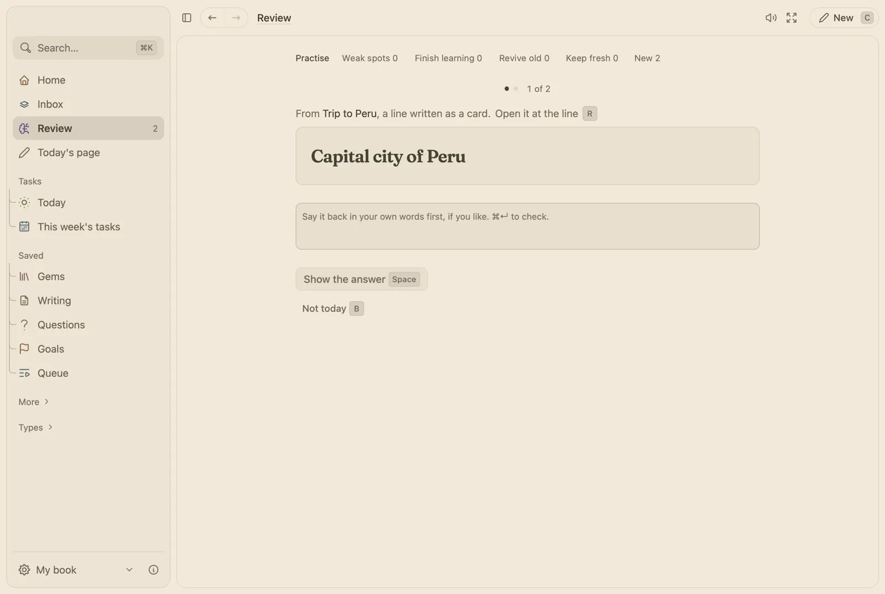

Your notes, ready for the exam.
Write notes the way you always do. Mark the lines worth testing, and Review spreads them over the weeks before the exam instead of the night before.

What you would use
- Cards from your notes. Type question :: answer on any line and it is a card, kept in step with the note.
- Exams set the pace. Give a tag an exam date and its cards are paced to be ready by that day.
- Blurt a topic. Write everything you remember about a tag in five minutes, then see what you left out lit up, and those come up sooner.
- Short every day. Daily limits keep Review finishable, and a streak banks a rest day each week so a day off never breaks it.
- Bring your Anki cards. Import an Anki export and keep going where you were.